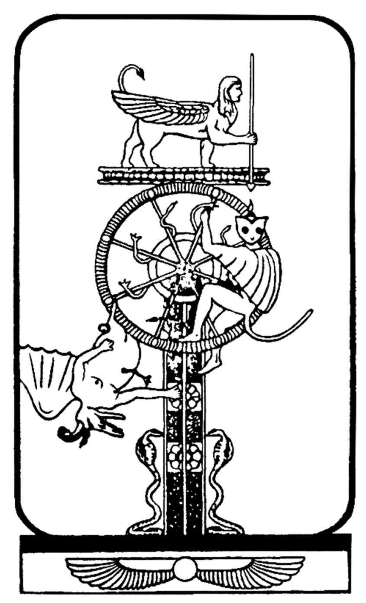
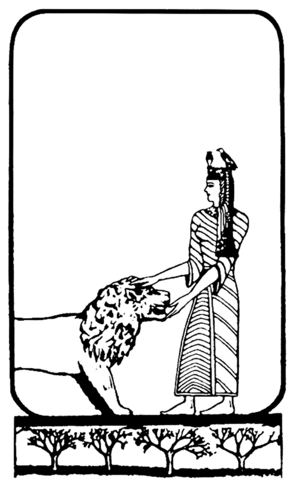
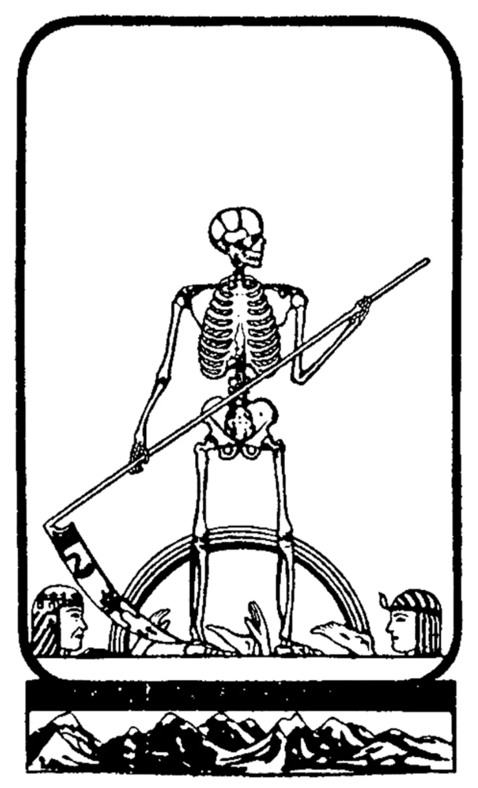
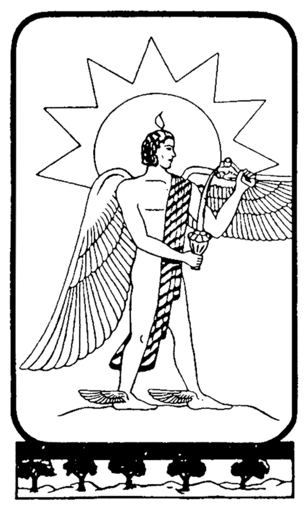

| 81.0 | RA:
I am Ra. I greet you in the love and in the light of the One Infinite
Creator. We communicate now.
|
| Ра: Я есмь Ра. Приветствую вас в любви и свете Единого Бесконечного Создателя.
Теперь мы общаемся.
|
| 81.1 | QUESTIONER: Could you first please tell me the condition of the instrument? |
| Собеседник: Не могли бы вы пожалуйста сначала рассказать о состоянии инструмента?
|
|
| RA:
I am Ra. The physical complex energy is in deficit at this particular
space/time nexus due to prolonged psychic accentuation of pre-existing
distortions. The remainder of the energy complex levels are as previously stated.
|
|
| Ра: Я есмь Ра. Энергия физического комплекса в дефиците в данной конкретной точке
пространства/времени из-за продолжающейся психической акцентуации ранее
существовавших искривлений. Остальные уровни энергетического комплекса таковы
как было сказано ранее.
|
| 81.2 | QUESTIONER:
Is this the reason for the instrument’s feeling of uninterrupted weariness?
|
| Собеседник: Является ли это причиной того что инструмент испытывает постоянную усталость?
|
|
| RA:
I am Ra. There are portions of your space/time in which this may be
said to be symptomatic of the psychic greeting reaction. However, the
continual weariness is not due to psychic greeting but is, rather, an
inevitable consequence of this contact.
|
|
| Ра: Я есмь Ра. Есть области вашего пространства/времени в которых можно сказать
что это симптоматично для реакции на психическое приветствие. Однако постоянная
усталость не из-за психического приветствия а скорее неизбежное последствие
этого контакта.
|
| 81.3 | QUESTIONER:
Why is this an inevitable consequence? What is the mechanism of contact
creating weariness?
|
| Собеседник: Почему это неизбежное последствие? Из-за чего контакт приводит к усталости?
|
|
| RA:
I am Ra. The mechanism creating weariness is that connection
betwixt the density wherein this instrument’s mind/body/spirit complex
is safely kept during these workings, and the altogether variant density in
which the instrument’s physical body complex resides at this space/time.
As the instrument takes on more of the coloration of the resting density,
the third-density experience seems more heavy and wearisome.
This was accepted by the instrument, as it desired to be of service. Therefore, we accept also this effect about which nothing of which we are aware may be done.
|
|
| Ра: Я есмь Ра. Механизм который приводит к усталости это связь между плотностью
где безопасно удерживается комплекс ума/тела/духа этого инструмента во время
этих работ, и совершенно другая плотность, в которой находится комплекс физического
тела этого инструмента в этом пространстве/времени. По мере того как этот инструмент
приобретает все большую окраску плотности покоя, опыт третьей плотности кажется
ему более тяжелым и изнурительным.
Инструмент на это согласился, поскольку он хотел служить. Поэтому мы также принимаем этот эффект, который насколько нам известно невозможно сгладить.
|
| 81.4 | QUESTIONER:
Is the effect a function of the number of sessions, and has it
reached a peak level, or will it continue to increase in effect?
|
| Собеседник: Является ли этот эффект следствием количества сеансов, и достиг ли он
пика, или его эффект продолжит усиливаться?
|
|
| RA:
I am Ra. This wearying effect will continue but should not be
confused with the physical energy levels having only to do with the, as
you would call it, daily round of experience.
In this sphere those things which are known already to aid this instrument will continue to be of aid. You will, however, notice the gradual increase in transparency, shall we say, of the vibrations of the instrument.
|
|
| Ра: Я есмь Ра. Этот изнуряющий эффект продолжится но его не следует путать
с уровнями физической энергии которые связаны лишь с, как вы бы сказали,
ежедневным круговоротом переживаний.
В этой сфере те вещи которые известны тем что они помогают этому инструменту продолжат быть полезными. Однако вы заметите постепенное повышение прозрачности, скажем так, вибраций инструмента.
|
| 81.5 | QUESTIONER:
I didn’t understand what you meant by that last statement. Would you explain?
|
| Собеседник: Я не понял что вы имели ввиду в последнем утверждении. Не могли бы вы объяснить?
|
|
| RA:
I am Ra. Weariness of the time/space nature may be seen to be that
reaction of transparent or pure vibrations with impure, confused, or
opaque environs.
|
|
| Ра: Я есмь Ра. Усталость из области времени/пространства можно рассматривать как
реакцию прозрачных или чистых вибраций с нечистым, запутанным или
непрозрачным окружением.
|
| 81.6 | QUESTIONER:
Is there any of this effect upon the other two of us in this group?
|
| Собеседник: Оказывает ли это какое-либо влияние на нас двоих в этой группе?
(т.е. на Дона и Джима, примеч.пер.)
|
|
| RA: I am Ra. This is quite correct. | |
| Ра: Я есмь Ра. Это совершенно верно.
|
| 81.7 | QUESTIONER:
Then we would also experience the uninterrupted wearying
effect as a consequence of the contact. Is this correct?
|
| Собеседник: Тогда мы тоже будем переживать постоянный изнуряющий эффект в качестве
последствия этого контакта? Это так?
|
|
| RA:
I am Ra. The instrument, by the very nature of the contact, bears the
brunt of this effect.
Each of the support group, by offering the love and the light of the One Infinite Creator in unqualified support in these workings, and in energy transfers for the purpose of these workings, experiences between 10 and 15 percent, roughly, of this effect. It is cumulative and identical in the continual nature of its manifestation.
|
|
| Ра: Я есмь Ра. Инструмент вследствие самой природы этого контакта, несет
на себе основную тяжесть этого эффекта.
Каждый член группы поддержки, предлагая любовь и свет Единого Бесконечного Творца в виде безоговорочной поддержки в этих сеансах и в передачах энергии для целей этих сеансов, испытывает примерно от 10 до 15 процентов этого эффекта. Эффект кумулятивен и идентичен в непрерывном характере своего проявления.
|
| 81.8 | QUESTIONER:
What could be the result of this continued wearying effect after a long period?
|
| Собеседник: А каков был бы результат этого беспрерывного изнурительного эффекта после
длительного периода?
|
|
| RA:
I am Ra. You ask a general query with infinite answers. We shall over-
generalize in order to attempt to reply.
One group might be tempted and thus lose the very contact which caused the difficulty. So the story would end. Another group might be strong at first but not faithful in the face of difficulty. Thus the story would end. Another group might choose the path of martyrdom in its completeness and use the instrument until its physical body complex failed from the harsh toll demanded when all energy was gone. This particular group, at this particular nexus, is attempting to conserve the vital energy of the instrument. It is attempting to balance love of service and wisdom of service, and it is faithful to the service in the face of difficulty. Temptation has not yet ended this group’s story. We may not know the future, but the probability of this situation continuing over a relatively substantial period of your space/time is large. The significant factor is the will of the instrument and of the group to serve. That is the only cause for balancing the slowly increasing weariness which will continue to distort your perceptions. Without this will the contact might be possible but finally seem too much of an effort.
|
|
| Ра: Я есмь Ра. Ты задаёшь общий вопрос с бесконечным количеством ответов.
Мы обобщим чтобы попытаться ответить на этот вопрос.
Одна группа может поддаться искушению и, таким образом, потерять тот самый контакт, который вызвал трудности. На этом история бы закончилась. Другая группа может быть сильной в самом начале но не преданной перед лицом трудностей. Таким образом история бы закончилась. Другая группа может выбрать путь мученичества во всей его полноте и использовать инструмент до тех пор, пока ее физическое тело не откажет от большой цены которую нужно заплатить когда вся энергия закончится. Эта конкретная группа, в этой конкретной точке, пытается сохранить жизненную энергию инструмента. Она пытается сбалансировать любовь к служению с мудростью служения, и она преданна служению перед лицом трудностей. Искушение ещё не завершило историю этой группы. Возможно мы не знаем будущего, но вероятность того что эта ситуация продлится на относительно существенный период вашего пространства/времени довольно велика. Важным фактором является воля инструмента и группы к служению. Это единственная причина для уравновешивания медленно усиливающегося изнурения которое продолжит искажать ваши восприятия. Без этой воли контакт может всё ещё быть возможен но в конечном итоге может показаться слишком большим усилием.
|
| 81.9 | QUESTIONER: The instrument would like to know why she has a feeling of
increased vital energy?
|
| Собеседник: Инструмент хотел бы знать почему ей кажется что у неё повысился уровень
жизненной энергии?
|
|
| RA: I am Ra. We leave this answer to the instrument. | |
| Ра: Я есмь Ра. Мы оставляем этот ответ на усмотрение инструмента.
|
| 81.10 | QUESTIONER:
She would like to know if she has an increased sensitivity to foods?
|
| Собеседник: Она хотела бы знать если у неё повышенная чувствительность к еде?
|
|
| RA:
I am Ra. This instrument has an increased sensitivity to all stimuli. It
is well that it use prudence.
|
|
| Ра: Я есмь Ра. У этого инструмента повышенная чувствительность ко всем
раздражителям/стимулам. Ей следует быть предусмотрительной.
|
| 81.11 | QUESTIONER:
Going back to the previous session, picking up on the tenth
archetype, which is the Catalyst of the Body or the Wheel of Fortune,
which represents interaction with other-selves. Is this a correct statement?
|
| Собеседник: Возвратимся к прошлому сеансу, а конкретно к десятому архетипу, который
является Катализатором Тела или Колесом Фортуны, который представляет
взаимодействие с другими "я". Правильно ли это утверждение?
Карта №10, Катализатор Тела (Колесо Фортуны):

|
|
| RA:
I am Ra. This may be seen to be a roughly correct statement in that
each catalyst is dealing with the nature of those experiences entering the
energy web and vibratory perceptions of the mind/body/spirit complex.
The most carefully noted addition would be that the outside stimulus of the Wheel of Fortune is that which offers both positive and negative experience.
|
|
| Ра: Я есмь Ра. Можно сказать что в целом это правильное утверждение, в том
смысле что каждый катализатор работает с природой тех опытов которые входят
в энергетическую паутину и вибрационные восприятия комплекса ума/тела/духа.
Наиболее тщательно отмеченным дополнением было бы то, что внешний стимул "Колеса Фортуны" - это то, что предлагает как положительный, так и отрицательный опыт.
|
| 81.12 | QUESTIONER:
The eleventh archetype, the Experience of the Body,
represents the catalyst that has been processed by the mind/body/spirit
complex and is called the Enchantress because it produces further seed for
growth. Is this correct?
|
| Собеседник: Одиннадцатый архетип, Опыт Тела, представляет собой катализатор который
был обработан комплексом ума/тела/духа и называется "Чародейка" поскольку
даёт дополнительные семена для роста. Это верно?
(Это например укрощение импульсов, зависимостей, недостатков или склонностей
тела, которые метафорически представляют собой льва, а "Чародейка" это опытное
существо которое научилось укрощать "своего льва" и его деструктивные эффекты.
Это в свою очередь может открывать новые горизонты перед существом. Например тот
кто осилил какой-то свой порок и стал (более-менее) свободен от него, может начать
новую жизнь, новые перспективы. У бывшего игромана появятся "лишние деньги", у бывшего
наркомана - здоровье, у бывшего ненавистника улучшится настроение и так далее,
всё это даст "семена для роста" (возможности) которые до этого были недоступны.
примеч.пер.)
Карта №11, Опыт Тела (Чародейка):

|
|
| RA: I am Ra. This is correct. | |
| Ра: Я есмь Ра. Это так.
|
| 81.13 | QUESTIONER:
We have already discussed the Significator, so I will skip to
number thirteen. Transformation of Body is called Death, for with death
the body is transformed to a higher-vibration body for additional
learning. Is this correct?
|
| Собеседник: Мы уже обсуждали Сигнификатор, поэтому я перейду к номеру тринадцать.
Трансформация Тела названа Смертью, поскольку посредством смерти тело
трансформируется в тело с более высокой вибрацией для дополнительного обучения.
Это так?
Карта №13, Трансформация Тела (Смерть):

|
|
| RA:
I am Ra. This is correct and may be seen to be additionally correct in
that each moment, and certainly each diurnal period of the bodily
incarnation, offers death and rebirth to one which is attempting to use
the catalyst which is offered it.
|
|
| Ра: Я есмь Ра. Это верно и можно сказать что это дополнительно является верным
в том что каждый момент, и определённо каждый суточный период телесного
воплощения, предоставляет смерть и возрождение тому кто пытается использовать
катализатор который ему предоставляется.
(Утром/днём тело просыпается и как бы "заново рождается",
а ночью тело как бы "умирает" а сон часто предоставляет (среди прочего)
закодированные подсказки из глубокого подсознания для освоения дневного
катализатора, эти подсказки может использовать тот кто к
этому стремится. примеч.пер.)
|
| 81.14 | QUESTIONER:
And finally, the fourteenth, the Way of the Body, is called
the Alchemist because there is an infinity of time for the various bodies to
operate within to learn the lessons necessary for evolution. Is this correct?
|
| Собеседник: И наконец, четырнадцатый, Путь Тела, назван Алхимиком потому что есть
бесконечное количество времени для разных тел чтобы выучить необходимые уроки для эволюции.
Это так?
Карта №14, Путь Тела (Алхимик):

|
|
| RA:
I am Ra. This is less than completely correct as the Great Way of the
Body must be seen, as are all the archetypes of the body, to be a mirror
image of the thrust of the activity of the mind.
The body is the creature of the mind and is the instrument of manifestation for the fruits of mind and spirit. Therefore, you may see the body as providing the athanor through which the alchemist manifests gold. (In this context, athanor can be defined as “an oven/a fire; a digesting furnance, formerly used in alchemy, so constructed as to maintain a uniform and constant heat.”)
|
|
| Ра: Я есмь Ра. Это не совсем верно поскольку Великий Путь Тела следует
рассматривать, также как и все архетипы тела, как зеркальное
отражение направленности деятельности разума.
Тело это творение разума и является инструментом проявления плодов тела и духа. Поэтому, можно представить себе тело как нечто предоставляющее атанор (В алхимии атанор — это печь, используемая для обеспечения равномерного и постоянного тепла для алхимического пищеварения. примеч.пер.) через который алхимик проявляет золото.
|
| 81.15 | QUESTIONER:
I have guessed that a way that I could enter into a better
comprehension of the development experience that is central to our work
is to compare what we experience now, after the veil was dropped, with
what was experienced prior to that time, starting possibly as far back as
the beginning of this octave of experience, to see how we got into the
condition we’re in now. If this is agreeable, I would like to retreat to the
very beginning of this octave of experience to investigate the conditions of
mind, body, and spirit as they evolved in this octave. Is this satisfactory,
acceptable?
|
| Собеседник: Я предположил, что лучший способ понять опыт развития, который занимает
центральное место в нашей работе, - это сравнить то, что мы испытываем сейчас,
после опускания завесы, с тем что было пережито перед этим, возможно начиная
аж с начала этой октавы опыта, чтобы понять как мы попали в ту ситуацию в которой
мы сейчас находимся. Если вас это устраивает, я хотел бы вернуться к самому
началу этой октавы опыта чтобы исследовать условия ума, тела, и духа по мере
того как они развивались в этой октаве. Вас это устраивает?
|
|
| RA: I am Ra. The direction of questions is your provenance. | |
| Ра: Я есмь Ра. Направление вопросов зависит от тебя.
|
| 81.16 | QUESTIONER:
Ra states that it has knowledge of only this octave, but it
seems that Ra has complete knowledge of this octave. Can you tell me
why this is?
|
| Собеседник: Ра утверждает, что ему известна только эта октава, но,
похоже, что Ра обладает полным знанием этой октавы. Не могли бы вы рассказать
почему это так?
|
|
| RA:
I am Ra. Firstly, we do not have complete knowledge of this octave.
There are portions of the seventh density which, although described to us
by our teachers, remain mysterious. Secondly, we have experienced a great
deal of the available refining catalyst of this octave, and our teachers have
worked with us most carefully that we may be one with all, that, in turn,
our eventual returning to the great allness of creation shall be complete.
|
|
| Ра: Я есмь Ра. Во первых, у нас нет полного знания этой октавы. Есть области
седьмой плотности которые, хоть они и были описаны нам нашими учителями, остаются
для нас таинственными. Во вторых, мы пережили большое количество имеющегося
совершенствующего катализатора этой октавы, и наши учителя тщательнейшим образом
работали с нами чтобы мы смогли стать едиными со всем, и, в свою очередь,
наше возможное возвращение в великое единство/всеобщность творения наконец-то сбудится.
|
| 81.17 | QUESTIONER:
Then Ra has knowledge from the first beginnings of this
octave through its present experience as, what I might call, direct or
experiential knowledge through communication with those space/times
and time/spaces, but has not yet evolved to or penetrated the seventh
level. Is this a roughly correct statement?
|
| Собеседник: Тогда у Ра есть знания с самого начала этой октавы до настоящего момента
посредством, как можно было бы сказать, прямого или эмпирического знания через
общение с теми пространствами/временами и временами/пространствами, но Ра ещё не
эволюционировал до или проник в седьмую плотность/уровень. В целом это
правильное утверждение?
|
|
| RA: I am Ra. Yes. | |
| Ра: Я есмь Ра. Да.
|
| 81.18 | QUESTIONER:
Why does Ra not have any knowledge of that which was
prior to the beginning of this octave?
|
| Собеседник: А почему у Ра нет знаний о том что было до начала этой октавы?
|
|
| RA:
I am Ra. Let us compare octaves to islands. It may be that the
inhabitants of an island are not alone upon a planetary sphere, but if an
ocean-going vehicle in which one may survive has not been invented, true
knowledge of other islands is possible only if an entity comes among the
islanders and says, “I am from elsewhere.” This is a rough analogy.
However, we have evidence of this sort, both of previous creation and
creation to be, as we in the stream of space/time and time/space view
these apparently non-simultaneous events.
|
|
| Ра: Я есмь Ра. Давайте сравним октавы с островами. Возможно обитатели острова
не одни на планетарной сфере, но если еще не изобретено океанское транспортное
средство, на котором можно выжить, то истинное знание о других островах
возможно только в том случае, если среди островитян появится некое существо
и скажет: “Я нездешний”. Это грубая аналогия. Однако у нас есть
аналогичные доказательства, как о прошлом творении так и о будущем, исходя из
того как мы, находясь в потоке пространства/времени и времени/пространства, видим
эти предположительно неодновременные события.
|
| 81.19 | QUESTIONER:
Well, we presently find ourselves in the Milky Way Galaxy of
some 200 or so million - correction, 200 or so billion - stars, and there
are millions and millions of these large galaxies spread out through what
we call space. To Ra’s knowledge, I assume, the number of these galaxies
is infinite? Is this correct?
|
| Собеседник: В настоящее время мы находимся в галактике Млечный Путь в которой
примерно 200 миллионов - поправка, примерно 200 миллиардов - звезд,
и есть миллионы и миллионы таких больших галактик, разбросанных по тому, что
мы называем космосом. Насколько известно Ра, я полагаю, число этих галактик
бесконечно? Это верно?
|
|
| RA: I am Ra. This is precisely correct and is a significant point. | |
| Ра: Я есмь Ра. Совершенно верно и это важная заметка.
|
| 81.20 | QUESTIONER: The point being that we have unity. Is that correct? |
| Собеседник: Суть в том, что мы имеем дело с единством. Это верно?
|
|
| RA: I am Ra. You are perceptive. | |
| Ра: Я есмь Ра. Ты проницателен.
|
| 81.21 | QUESTIONER:
Then what portion of these galaxies is Ra aware of? Has Ra
experienced consciousness in many other of these galaxies?
|
| Собеседник: Тогда какая часть этих галактик известны Ра? Пережил ли Ра сознание
во многих других из этих галактик?
|
|
| RA: I am Ra. No. | |
| Ра: Я есмь Ра. Нет.
|
| 81.22 | QUESTIONER:
Does Ra have any experience, or knowledge of, or travel to,
in one form or another, any of these other galaxies?
|
| Собеседник: Есть ли у Ра опыт, или знания, об этих других галактиках,
или путешествовал ли Ра каким-либо образом к ним?
|
|
| RA: I am Ra. Yes. | |
| Ра: Я есмь Ра. Да.
|
| 81.23 | QUESTIONER:
Just . . . it’s unimportant, but just roughly how many other
of these galaxies has Ra, shall we say, traveled to?
|
| Собеседник: Хоть это и не важно, но примерно в скольких из этих галактик Ра, скажем так,
побывал?
|
|
| RA:
I am Ra. We have opened our hearts in radiation of love to the entire
creation. Approximately 90 percent of the creation is, at some level, aware
of the sending and able to reply. All of the infinite Logoi are one in the
consciousness of love. This is the type of contact which we enjoy rather
than travel.
|
|
| Ра: Я есмь Ра. Мы открыли наши сердца излучая любовь в сторону всего творения.
Примерно 90 процентов этого творения осознаёт, в той или иной степени, о нашем
послании и может ответить. Все бесконечные Логосы едины в сознании любви.
Нам нравится именно такой контакт, нежели путешествия.
|
| 81.24 | QUESTIONER:
So that I can just get a little idea of what I am talking about,
what are the limits of Ra’s travel in the sense of directly experiencing or
seeing the activities of various places? Is it solely within this galaxy, and if
so, how much of this galaxy? Or does it include some other galaxies?
|
| Собеседник: Я хотел бы немного уточнить то что я хотел выяснить, каковы пределы путешествия
Ра в смысле прямого переживания или наблюдения за действиями разных мест? Это
в пределах лишь этой галактики, и если да, то какая часть этой галактики? Или это
включает и некоторые другие галактики?
|
|
| RA:
I am Ra. Although it would be possible for us to move at will
throughout the creation within this Logos - that is to say, the Milky Way
Galaxy, so-called—we have moved where we were called to service; these
locations being, shall we say, local and including Alpha Centauri, planets
of your solar system which you call the Sun, Cepheus, and Zeta Reticuli.
To these sub-Logoi we have come, having been called.
|
|
| Ра: Я есмь Ра. Хоть у нас и есть возможность перемещаться по собственному желанию
через творение в пределах этого Логоса - то есть, этого Млечного Пути,
так-называемые-мы перемещались в места где нас позвали к служению; эти места будучи,
скажем так, местными включая Альфа Центавра, планеты вашей солнечной системы которые
вы называете Солнцем, Цефей и Дзе́та Се́тки. К этим Логосам мы прибыли будучи позваны.
|
| 81.25 | QUESTIONER:
Was the call in each instance from the third-density beings,
or was this call from additional or other densities?
|
| Собеседник: Происходил ли зов в каждом случае от существ третьей плотности, или этот зов был
из дополнительных или других плотностей?
|
|
| RA:
I am Ra. In general, the latter supposition is correct. In the particular
case of the Sun sub-Logos, third density is the density of calling.
|
|
| Ра: Я есмь Ра. В общем, последнее предположение верно. В конкретном случае
под-Логоса Солнца, зов был из третьей плотности.
|
| 81.26 | QUESTIONER:
Ra then has not moved at any time into one of the other
major galaxies. Is this correct?
|
| Собеседник: Тогда Ра не перемещался когда-либо в какую-либо другую большую галактику. Это так?
|
|
| RA: I am Ra. This is correct. | |
| Ра: Я есмь Ра. Верно.
|
| 81.27 | QUESTIONER:
Does Ra have knowledge of, say, any other major galaxy or
the consciousness or anything in that galaxy?
|
| Собеседник: Есть ли у Ра знания, скажем так, какой-либо другой большой галактики, или
об её сознании или чего-либо ещё из той галактики?
|
|
| RA:
I am Ra. We assume you are speaking of the possibility of knowledge
of other major galaxies. There are wanderers from other major galaxies
drawn to the specific needs of a single call. There are those among our
social memory complex which have become wanderers in other major
galaxies.
Thus there has been knowledge of other major galaxies, for to one whose personality, or mind/body/spirit complex, has been crystallized the universe is one place, and there is no bar upon travel. However, our interpretation of your query was a query concerning the social memory complex traveling to another major galaxy. We have not done this, nor do we contemplate it, for we can reach in love with our hearts.
|
|
| Ра: Я есмь Ра. Мы предполагаем что ты говоришь о возможности познания других
больших галактик. Есть странники из других больших галактик привлекаемые к
конкретным потребностям определённого зова. В нашем комплексе общественной
памяти есть те кто стали странниками в других больших галактиках.
Таким образом было известно о других больших галактиках, поскольку для того чья личность, или комплекс ума/тела/духа, был кристаллизован то вселенная является единым местом, и нет преград для путешествий. Однако, наша интерпретация твоего вопроса была в том что он был о путешествии нашего комплекса общественной памяти к другой большой галактике. Этого мы не делали, и не размышляем об этом, поскольку мы можем добраться в любви при помощи наших сердец.
|
| 81.28 | QUESTIONER:
Thank you. In this line of questioning I am trying to
establish a basis for understanding the foundation for not only the
experience that we have now but how the experience was formed and, and
how it is related to all the rest of the experience through the portion of
the octave as we understand it. I am assuming, then, that all of these
galaxies, millions . . . infinite number of galaxies which we can just begin
to become aware of with our telescopes, they are all of the same octave. Is
this correct?
|
| Собеседник: Спасибо. В этой серии вопросов я пытаюсь определить основу для понимания
фундамента не только лишь нашего нынешнего опыта, но и того как этот опыт был
создан, и как он связан со всем остальным опытом на протяжении области этой октавы
как нам это представляется. Тогда я полагаю что все эти галактики, миллионы...
бесконечное число галактик которые мы можем лишь начать открывать для себя при
помощи телескопов, они все относятся к одной и той же октаве. Это верно?
|
|
| RA: I am Ra. This is correct. | |
| Ра: Я есмь Ра. Это так.
|
| 81.29 | QUESTIONER:
I was wondering if, in that some of the wanderers from Ra
going to the other major galaxies (that is, leaving this system of 200 plus
billion stars of lenticular shape and going to another cluster of billions of
stars and finding their way to some planetary situation there), would any
of these wanderers encounter the dual polarity that we have here, both the
service-to-self and the service-to-others polarity?
|
| Собеседник: Мне было интересно, не столкнется ли кто-нибудь из странников Ра,
отправляющихся в другие крупные галактики (то есть покидающих эту систему из 200 с лишним
миллиардов звезд линзовидной формы и отправляющихся в другое скопление из миллиардов
звезд и находящих там свой путь к какой-нибудь планете), столкнётся ли кто-нибудь из
этих странников с той двойной полярностью, которую мы здесь имеем,
полярность служения себе и служения другим?
|
|
| RA: I am Ra. This is correct. | |
| Ра: Я есмь Ра. Верно.
|
| 81.30 | QUESTIONER:
Now, you stated earlier that toward the center of this galaxy,
I believe—in what, to use a poor term, you could call the older portion—
you would find no service-to-self polarization, but that this was a, what
you might call, a later experience. Am I correct in assuming that this is
true of the other galaxies with which wanderers from Ra have experience?
That at the center of these galaxies only the service-to-others polarity
existed, and the experiment started farther out toward the rim of the galaxy?
|
| Собеседник: Итак, ранее вы заявляли что к центру этой галактики, мне кажется что в том
что можно было бы назвать (используя неподходящий термин) старой областью, нет
поляризации служения себе, что это был, скажем так, полее поздний опыт. Прав ли
я в своём предположении что так обстоят дела и в других галактиках в которых
были странники Ра? Что в центре этих галактик существовала лишь полярность
служения другим, и что эксперимент начался дальше в сторону окраин галактики?
|
|
| RA:
I am Ra. Various Logoi and sub-Logoi had various methods of
arriving at the discovery of the efficiency of free will in intensifying the
experience of the Creator by the Creator. However, in each case this has
been a pattern.
|
|
| Ра: Я есмь Ра. Разные Логосы и под-Логосы использовали разные методы достижения
открытия эффективности свободы воли в интенсификации переживания Создателя Создателем.
Однако, в каждом случае это было шаблоном.
|
| 81.31 | QUESTIONER:
You mean then that the pattern is that the service-to-self
polarization appeared farther out from the center of the galactic spiral?
|
| Собеседник: Вы хотите сказать что шаблон заключается в том что поляризация служения
себе появилась подальше от центра галактической спирали?
|
|
| RA: I am Ra. This is correct. | |
| Ра: Я есмь Ра. Это так.
|
| 81.32 | QUESTIONER:
From this I will assume that at the beginning of the octave
we had the core, with many galactic spirals forming — and I know this is
incorrect in the sense of timelessness — but as the spiral formed then I am
assuming that, in this particular octave, the experiment then must have
started somewhat roughly, simultaneously in many, many of the budding,
or building, galactic systems by the experiment of the veiling in extending
the free will. Am I in any way correct with this assumption?
|
| Собеседник: Исходя из этого я предполагаю что вначале октавы существовало ядро,
с появлением многих галактических спиралей - и я знаю что это неверно с точки
зрения безвременья - но по мере того как формировалась спираль то я предполагаю
что, в этой конкретной октаве, эксперимент должен был начаться довольно грубо,
одновременно во многих, многих зарождающихся, или строящихся, галактических системах
при помощи эксперимента с завесой для расширения свободы воли. Прав ли я в
каком-либо смысле в этом предположении?
|
|
| RA:
I am Ra. You are precisely correct.
This instrument is unusually fragile at this space/time, and has used much of the transferred energy. We would invite one more full query for this working.
|
|
| Ра: Я есмь Ра. Ты совершенно прав.
Этот инструмент необычайно хрупок в этом пространстве/времени, и использовал основную часть переданной энергии. Мы приветствуем ещё один длинный вопрос на этом сеансе.
|
| 81.33 | QUESTIONER:
Actually, I don’t have much more on this except to make the
assumption that there must have been some type of communication
throughout the octave so that when the first experiment became effective,
the knowledge of this then spread rapidly through the octave and was
picked up by other budding galactic spirals, you might say. Is this correct?
|
| Собеседник: На самом деле, у меня больше ничего нет по этому поводу, кроме
предположения, что должна была существовать какая-то связь
по всей октаве, чтобы когда первый эксперимент дал результат,
знания об этом быстро распространились по октаве и были
подхвачены другими зарождающимися галактическими спиралями, можно сказать.
Это так?
|
|
| RA:
I am Ra. This is correct. To be aware of the nature of this
communication is to be aware of the nature of the Logos. Much of what
you call creation has never separated from the one Logos of this octave
and resides within the One Infinite Creator. Communication in such an
environment is the communication of cells of the body. That which is
learned by one is known to all. The sub-Logoi, then, have been in the
position of refining the discoveries of what might be called the earlier sub-Logoi.
May we ask if we may answer any brief queries at this working?
|
|
| Ра: Я есмь Ра. Правильно. Осознавать природу этого общения означает осознавать
природу Логоса. Много из того что вы называете творением никогда не отделялось
от единого Логоса этой октавы и находится в пределах Единого Бесконечного Создателя.
Общение в этих условиях это общение клеток организма. То чему научится один
будет известно всем. Поэтому под-Логосы были в ситуации усовершенствования
открытий тех кого можно назвать более ранними под-Логосами.
А сейчас можно ли спросить если есть какие-то короткие вопросы?
|
| 81.34 | QUESTIONER:
Only if there is anything we can do to make the instrument
more comfortable or improve the contact?
|
| Собеседник: Только если мы можем как-то улучшить комфорт инструмента или сам контакт?
|
|
| RA:
I am Ra. It is difficult to determine the energy levels of the instrument
and support group. Of this we are aware. It is, however, recommended
that every attempt be made to enter each working with the most desirable
configurations of energy possible.
All is well, my friends. You are conscientious, and the alignments are well. I am Ra. I leave you in the love and the light of the One Infinite Creator. Go forth, therefore, rejoicing in the power and in the peace of the Infinite Creator. Adonai.
|
|
| Ра: Я есмь Ра. Сложно определить энергетические уровни инструмента и группы
поддержки. Это мы осознаём. Однако, мы советуем чтобы вы прилагали максимальное
усилие чтобы начинать каждый сеанс с наилучшими конфигурациями энергии насколько
это возможно.
Всё в порядке, друзья мои. Вы добросовестны, и выравнивания в норме. Я есмь Ра. Покидаю вас в любви и свете Единого Бесконечного Создателя. Ступайте же, ликуя в могуществе и покое Бесконечного Создателя. Адонай. |